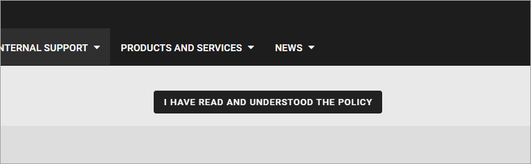
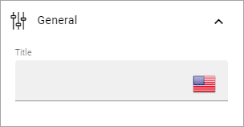
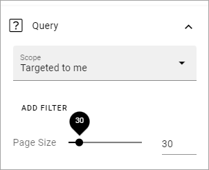
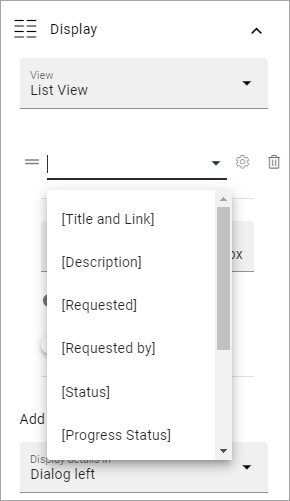
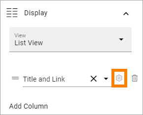
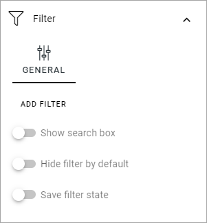

Sign-Off Requests Rollup in Omnia 6.13¶
The block can be used for different purposes regarding sign-off requests. This page describes how it works in Omnia 6.13
Settings for Sign-off Requests are available in Tenant settings: Settings for Sign-off Requests in Omnia 6.13
One way of using this block is a listing of sign-off requests that is sent to the logged in user or a group that the user belongs to. Here’s an example of such a listing with one of the requests opened:

In this example, the user has read and signed off two of the posts, but not yet the third.
The colored dots indicates the progress for the whole request, meaning the progress for all recipients: green for all has signed off, yellow for some and white for none.
The user can read the information by clicking the link and can then sign off using a button. Here’s two examples of how that button can look:
Or:

Of course, the user can also sign-off by simply ticking the box in the list.
It’s also possible to “undo” a request, really meaning reading the information again. “Undo” is simply done by unchecking the box:

The other two scopes - “Requested by me” and “All requests” can be usful for administrators. The “Requested by me” scope can be very useful for an administrator to keep track of sign-off requests that administrator has sent.
Settings¶
The following settings can be available:

General¶
On the General tab you can add a title for the block, in any or all the tenant languages (click the flag to change language):
Query¶
On this tab you decide what the block should display and for whom.
Scope: You can choose to display “All requests”, “Requested by me”, meaning all sign-off request the logged in user has sent, or “Targeted to me”, meaning sign-off requests targeted to the logged in user, or a group the logged in user belongs to.
Add filter: Add a filter for the query, if you don’t want all the requests within the scope to be displayed. You can select “Requested by”, “Progress status”, “My progress status” or “Status”. Additional filters can be available depending on the Type used when the request was created. “My progress status” displays the status for the logged in user. For information about what the other default filters can display, see: Requests
Page size: To limit the number of items being displayed per “page”, add a fixed number here or use the slider.
Display¶
This tab contains settings for the view:

View: Can be “Summary view” or “List view”. Summary view can only be used for the scope “Targeted to me”. The image at the top of this page is an example of a summary view.
Add column: For List view you must add at least one column. Click this option to do that. For more information, see below.
Display details in: In a List view, a post can be clicked for further details. Here you set how the details should be displayed; in a dialog to the left or a dialog to the right.
Paging: Avalailable for Summary view. Can be “No paging”, “Classic” or “Scroll”.
Sort by: Select what the view will be sorted by.
Ascending/Descending: Sort order is selected here, you know the drill.
No result text: If a text should be shown when the result of the query is empty, add the text here, in any or all the tenant languages.
Padding: You can add some padding if needed, the usual way for a block.
When you add a column, first select the column in the list:
It’s then possible to set a fixed width for the column, if needed, an decide to show the label or set a custom label.
If you need to edit the settings for a column, you can click the cogwheel to display them:
Filter¶
The following options are found on this tab:
Show search box: To add a search box, select this option. When you do, some additional settings becomes available.
Hide filter by default: If you chose a search box you can select this option. Then no filters are shown until users has executed a search and got a search result.
Save filter state: If you select this option the filter keeps it’s state in the page url as long as the page is active, and will be activated when the user goes back to the page, by using the browser’s Back button. The url can also be copied and for example be used to prepopulate the rollup.
The WRITE TAB is not used here. The LAYOUT tab contains general settings, see: General Block Settings